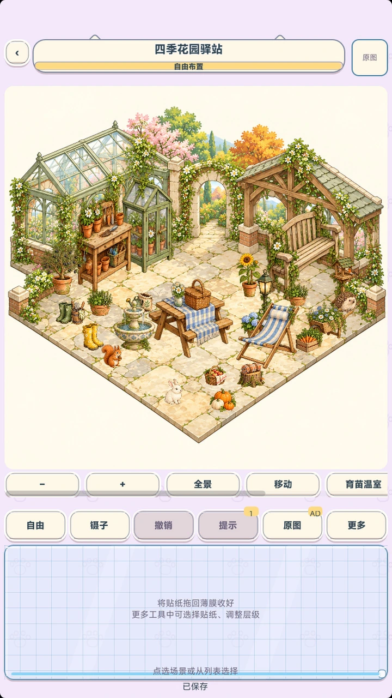

隔着手指也能看清要贴哪里
小镊子、透明薄膜和悬浮预览依次交代揭起、移动和落位。接近对应位置后松手吸附，手指挡住细节时也能判断目标。
TAPTAP MAKER / 个人 AI 游戏实践
像素贴纸 / 场景布置 / 轻松收纳
用小镊子揭下一枚贴纸，把窗边的书架贴好，再慢慢添上植物和灯。摊开的贴纸一点点变成一间你愿意多看一会儿的房间。

TapTap 公开测试 · 2026.10.25 核对
分批取出贴纸，观察轮廓，拖到合适位置后松手吸附。五大主题包含 45 个场景、600 件贴纸。大场景可以缩放和平移，完成目标后还能继续移动物件、调整层级。
展示图来自 2026.10.25 核对的 TapTap 公开游戏页展示图；保留原图，部分含商店宣传文案，不冒充本次重新运行游戏的实机录制。
小镊子、透明薄膜和悬浮预览依次交代揭起、移动和落位。接近对应位置后松手吸附，手指挡住细节时也能判断目标。
大场景支持缩放、平移与分区查看。物件再多，也能先在一块区域对照轮廓，贴好再移到另一块。

达到目标后还可以移动物件、调整前后层级并撤销。照着目标搭好的布局，可以继续改成想留下来的样子。
点击图片可查看原图。

TAPTAP / 游戏入口
打开 TapTap 游戏页，从喜欢的场景贴起。